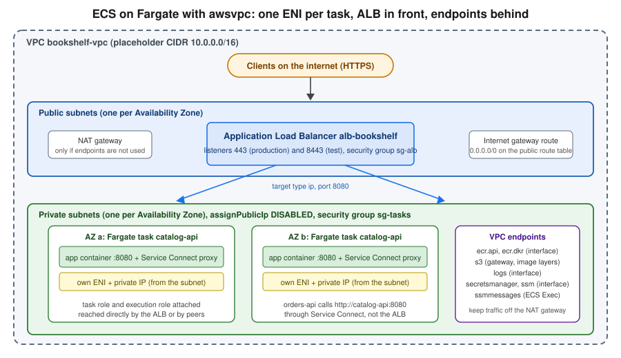
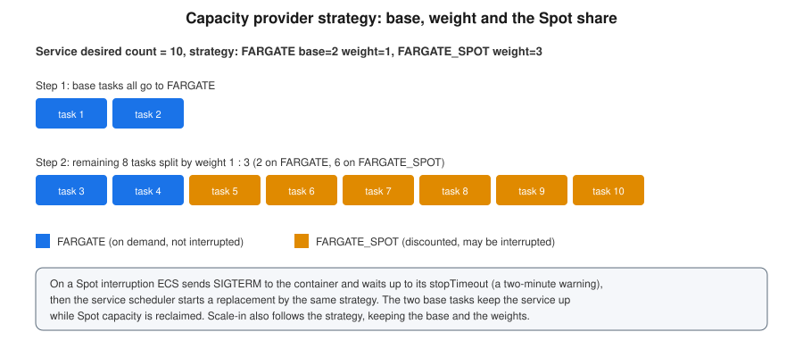

ECS Deployments, Scaling and Networking
|
This content was generated with the assistance of AI and should be verified against the official documentation before being relied on in production. See the section bibliography for the reference material consulted while preparing these pages. |
Commands and behaviour on this page are current for AWS CLI v2 (2.37 line), the Amazon ECS built-in blue/green
(July 2025) and linear and canary (October 2025) deployment strategies, and the GitHub Actions
aws-actions/configure-aws-credentials v6, amazon-ecs-render-task-definition v1 and
amazon-ecs-deploy-task-definition v2 (all checked 2026-10-01); re-verify against aws --version and the linked
reference pages before relying on them in a pipeline.
ECS and Fargate gets the Bookshelf catalog-api running: a cluster, a task definition, a service
behind the alb-bookshelf load balancer, and the roles and logs around them. This page is what happens next, once real
traffic and real releases arrive: how tasks are wired into the network, how to ship a new image without dropping
requests, how to roll back automatically, how the service grows and shrinks, how services call each other, how to run
on cheaper capacity, and how to look inside a task that misbehaves. It assumes the cluster bookshelf, the service
catalog-api, the task definition family catalog-api and the ALB from that page; every command below uses shell
variables for the identifiers it needs rather than real IDs.
export AWS_REGION=us-east-1 # placeholder Region
export ACCOUNT_ID="$(aws sts get-caller-identity --query Account --output text)"
export CLUSTER=bookshelf
export SERVICE=catalog-apiFor the AWS CLI itself see the ECS Command Reference.
Networking with awsvpc
On Fargate every task uses the awsvpc network mode (EC2 and Managed Instances tasks should use it too): each task gets
its own elastic network interface (ENI) and a private IP address from the subnet it is placed in, and its own security
group. The task is a first-class VPC citizen, so security group rules, VPC Flow Logs and route tables apply to a single
task rather than to a shared host. The consequences that matter in practice:
-
Subnet sizing. Every running task consumes one IP address; a rolling or blue/green deployment temporarily doubles that. Use subnets large enough for the peak task count of all services in them plus the deployment overlap, one subnet per Availability Zone, and give the service at least two so the scheduler can spread tasks.
-
Public or private. Place tasks in private subnets with
assignPublicIp=DISABLEDand let the load balancer in the public subnets be the only internet-facing component. A task in a public subnet needsassignPublicIp=ENABLEDto pull images and reach the internet, and every public IPv4 address is billed by the hour. -
Reaching AWS APIs without a NAT gateway. A private task must still pull its image from Amazon ECR, write logs to CloudWatch Logs, read secrets and be reachable by ECS Exec. A NAT gateway works but charges per hour and per gigabyte processed; VPC endpoints keep that traffic on the AWS network. The usual set for Fargate is the interface endpoints
com.amazonaws.<region>.ecr.api,ecr.dkr,logs,secretsmanagerandssm(plusssmmessagesfor ECS Exec), and the S3 gateway endpoint, which ECR needs because image layers are stored in S3. See VPC Networking for creating them. -
Security group chain. The ALB security group allows 443 from the internet; the task security group allows the container port only from the ALB security group. Nothing else needs inbound access.

In the AWS Management Console
-
Open the Amazon ECS console, select the Region, then Clusters →
bookshelf→ Services →catalog-api→ Update service. -
Expand Networking. Choose the VPC, select only private subnets (at least two Availability Zones), choose the task security group, and turn Public IP off.
-
In Load balancing confirm the load balancer, listener and target group, and set the Health check grace period so a slow-starting Spring Boot task is not killed before it is ready.
-
Select Update. Changing the network configuration starts a new deployment.
-
To create the endpoints, open the VPC console → Endpoints → Create endpoint, choose the service name, the VPC, the private subnets and a security group that allows 443 from the task security group.
With the AWS CLI
# Security groups: ALB accepts HTTPS from anywhere, tasks accept 8080 only from the ALB
export VPC_ID=vpc-0123456789abcdef0 # placeholder
SG_ALB=$(aws ec2 create-security-group --group-name sg-alb-bookshelf \
--description "alb-bookshelf" --vpc-id "$VPC_ID" --query GroupId --output text)
SG_TASKS=$(aws ec2 create-security-group --group-name sg-tasks-bookshelf \
--description "bookshelf ECS tasks" --vpc-id "$VPC_ID" --query GroupId --output text)
aws ec2 authorize-security-group-ingress --group-id "$SG_ALB" \
--protocol tcp --port 443 --cidr 0.0.0.0/0
aws ec2 authorize-security-group-ingress --group-id "$SG_TASKS" \
--protocol tcp --port 8080 --source-group "$SG_ALB"
# Move the running service to private subnets and the task security group
aws ecs update-service --cluster "$CLUSTER" --service "$SERVICE" \
--network-configuration "awsvpcConfiguration={subnets=[subnet-aaaa1111,subnet-bbbb2222],securityGroups=[$SG_TASKS],assignPublicIp=DISABLED}" \
--health-check-grace-period-seconds 60See create-security-group, authorize-security-group-ingress and update-service, and the awsvpc networking guide.
# Interface endpoints for ECR, logs and ECS Exec; the S3 gateway endpoint for image layers
for SVC in ecr.api ecr.dkr logs secretsmanager ssmmessages; do
aws ec2 create-vpc-endpoint --vpc-id "$VPC_ID" --vpc-endpoint-type Interface \
--service-name "com.amazonaws.${AWS_REGION}.${SVC}" \
--subnet-ids subnet-aaaa1111 subnet-bbbb2222 --security-group-ids "$SG_ENDPOINTS" \
--private-dns-enabled
done
aws ec2 create-vpc-endpoint --vpc-id "$VPC_ID" --vpc-endpoint-type Gateway \
--service-name "com.amazonaws.${AWS_REGION}.s3" --route-table-ids rtb-0123456789abcdef0See create-vpc-endpoint and the ECR VPC endpoints guide.
Application Load Balancer integration
A service registers its tasks with an Application Load Balancer target group of type ip, because each awsvpc task is
an IP address rather than an instance. ECS adds a task to the target group when it starts and removes it (with
connection draining) when it stops; the load balancer, not ECS, decides when traffic reaches it. Settings worth
getting right:
-
Target group health check. Point it at a lightweight endpoint such as the Spring Boot Actuator readiness path, with a short interval and a small healthy threshold, so a new task is added quickly but a broken one is not.
-
Health check grace period. The service setting
healthCheckGracePeriodSecondstells the scheduler to ignore failing load balancer health checks for that long after a task starts. Set it to cover the application’s start-up time; without it a slow start looks like a failure and the task is replaced in a loop. -
Deregistration delay. How long the load balancer keeps sending in-flight requests to a task that is being removed. Keep it no longer than the container
stopTimeout(below). -
Slow start. Optionally ramps traffic up to a new target so a cold JVM is not hit with its full share at once.
-
Multiple target groups and path rules. One ALB can front
catalog-apiandorders-apiwith host or path rules, each service owning a target group.
Listener, rule and TLS configuration, and the load-balancer decision tree, are in Load Balancers and Gateways; the target group used here was created with the service in ECS and Fargate. To tune the target group:
aws elbv2 modify-target-group --target-group-arn "$TG_ARN" \
--health-check-path /actuator/health/readiness --health-check-interval-seconds 15 \
--healthy-threshold-count 2 --unhealthy-threshold-count 3
aws elbv2 modify-target-group-attributes --target-group-arn "$TG_ARN" \
--attributes Key=deregistration_delay.timeout_seconds,Value=30 \
Key=slow_start.duration_seconds,Value=30Graceful shutdown and health checks
A deployment, a scale-in or a Spot interruption all end the same way: ECS sends SIGTERM to the container’s main
process, waits up to stopTimeout seconds, then sends SIGKILL. The default is 30 seconds and Fargate allows at most
120 seconds. A task that ignores SIGTERM drops its in-flight requests, so make the application finish them first.
For Spring Boot, enable graceful shutdown and keep the shutdown phase shorter than stopTimeout and than the
deregistration delay budget:
server.shutdown=graceful
spring.lifecycle.timeout-per-shutdown-phase=25s
management.endpoint.health.probes.enabled=trueand in the container definition set "stopTimeout": 35. Run the application as PID 1 (an exec form ENTRYPOINT, not
a shell wrapper) so it actually receives the signal; if it cannot be PID 1, set linuxParameters.initProcessEnabled to
true. The Spring-side details are in Metrics and Observability: Micrometer, Actuator, and Distributed Tracing.
ECS has two health-check layers and both can replace a task. A container health check (healthCheck in the
container definition: a command run inside the container, with interval, timeout, retries and startPeriod)
marks the task unhealthy and ECS replaces it. The load balancer health check removes it from rotation, and when
healthCheckGracePeriodSeconds has passed ECS also replaces it. Use the container check for "the process is wedged",
the ALB check for "this instance cannot serve requests".
See the task definition parameters reference.
Deployment strategies
An Amazon ECS service replaces its tasks with a new service revision whenever the task definition, the image or the configuration changes. The strategy decides how the old (blue) and new (green) revisions overlap. Older guides and tutorials show only rolling updates and a CodeDeploy-driven blue/green; the current options are built into ECS itself:
| Strategy | How traffic moves | Rollback | Use it when |
|---|---|---|---|
Rolling ( |
ECS starts new tasks and stops old ones in batches bounded by |
Deployment circuit breaker or CloudWatch alarms, rolling back to the last completed revision. |
Stateless services where mixed versions are fine and spare capacity is tight. |
Blue/green ( |
ECS starts the full green revision beside blue, optionally routes test traffic to it, then moves all production traffic at once. Blue stays up for the bake time. |
Instant: traffic returns to blue during the bake time, automatically on an alarm or by hand. |
You need to test the new version with real wiring before any user sees it. |
Canary ( |
A small percentage of production traffic goes to green first, ECS waits for the canary bake time, then moves the rest. |
Alarm-based or manual during the canary and bake phases. |
You want a small blast radius for the first users. |
Linear ( |
Traffic moves in equal steps (for example 10 percent every five minutes) until green has 100 percent. |
Alarm-based or manual at any step. |
You want gradual ramp-up and time to watch metrics at each step. |
The three traffic-shifting strategies need an Application Load Balancer, a Network Load Balancer or Service Connect to manage the shift; a service with none of them (a headless worker) can still use them, but ECS then replaces the tasks without managing any traffic. They also temporarily run both revisions, so budget roughly double the task count (and subnet IPs) during a deployment.
Rolling updates and the circuit breaker
A rolling update is the default. Two percentages bound it, both relative to the service’s desired count:
minimumHealthyPercent (default 100) is the floor of tasks that must stay healthy, and maximumPercent (default 200) is
the ceiling of running plus pending tasks. With 100/200 and four tasks, ECS starts up to four new tasks before stopping
any old one, so capacity never dips but you briefly pay for eight. With 50/100 it stops two old tasks first, saving
money at the cost of reduced capacity. On Fargate, prefer 100/200.
The deployment circuit breaker makes a rolling deployment fail instead of retrying forever. It counts tasks that
cannot reach RUNNING and tasks that fail health checks, and when the count reaches a threshold the deployment moves
to FAILED; with rollback on, ECS returns the service to the last COMPLETED revision. By default the threshold is
50 percent of the desired count, clamped between 3 and 200, and only consecutive failures count (resetOnHealthyTask
is true). The circuit breaker works only with the rolling ECS controller; blue/green, canary and linear use alarms
and hooks instead.
In the AWS Management Console
-
In the ECS console open the service and choose Update service.
-
Under Deployment options choose Rolling update, set Min running tasks % and Max running tasks %.
-
Under Deployment failure detection turn on Use the Amazon ECS deployment circuit breaker and Roll back on failures; optionally also Use CloudWatch alarm(s) and select the alarms.
-
Choose Update and watch the Deployments tab and the Events tab.
With the AWS CLI
aws ecs update-service --cluster "$CLUSTER" --service "$SERVICE" \
--deployment-configuration '{
"strategy": "ROLLING",
"minimumHealthyPercent": 100,
"maximumPercent": 200,
"deploymentCircuitBreaker": {
"enable": true,
"rollback": true,
"resetOnHealthyTask": true,
"thresholdConfiguration": { "type": "BOUNDED_PERCENT", "value": 50 }
},
"alarms": {
"alarmNames": ["catalog-api-5xx-high"],
"enable": true,
"rollback": true
}
}'
# Ship a new revision and wait for the deployment to settle
aws ecs update-service --cluster "$CLUSTER" --service "$SERVICE" \
--task-definition catalog-api --force-new-deployment
aws ecs wait services-stable --cluster "$CLUSTER" --services "$SERVICE"
aws ecs describe-services --cluster "$CLUSTER" --services "$SERVICE" \
--query 'services[0].deployments[].[status,rolloutState,rolloutStateReason]' --output tableBuilt-in blue/green
With BLUE_GREEN, ECS keeps two target groups behind one listener rule. The tasks of the new revision register in the
alternate target group while blue keeps serving from the primary one. If you configure a test listener rule, ECS
points it at green so you can exercise the new revision through a separate port or header before any production
request reaches it. Then ECS switches the production listener rule to green and starts the bake time, during which
both revisions run so a rollback is only a rule switch. When the bake time ends (without an alarm or a manual
rollback) blue is scaled down.
The deployment moves through named lifecycle stages: RECONCILE_SERVICE, PRE_SCALE_UP, SCALE_UP,
POST_SCALE_UP, TEST_TRAFFIC_SHIFT, POST_TEST_TRAFFIC_SHIFT, PRE_PRODUCTION_TRAFFIC_SHIFT,
PRODUCTION_TRAFFIC_SHIFT, POST_PRODUCTION_TRAFFIC_SHIFT, BAKE_TIME and CLEAN_UP. You can attach lifecycle hooks
to most stages: a Lambda function (for example a smoke test that returns SUCCEEDED or FAILED) or a PAUSE hook
that waits for a human to continue or roll back. A Network Load Balancer adds ten minutes to the two traffic-shift
stages while ECS makes sure shifting is safe, and each stage can last up to 24 hours before ECS fails and rolls back.
Prerequisites, all created once:
-
Two target groups of type
ipin the service VPC (blue and green), the ALB, a production listener and optionally a test listener (for example on 8443) forwarding to the green target group. -
An infrastructure role that ECS assumes to modify the listener rules, with the AWS managed policy
AmazonECSInfrastructureRolePolicyForLoadBalancersand a trust policy forecs.amazonaws.com. -
The service uses the
ECSdeployment controller (the default) withstrategyset toBLUE_GREEN.
Infrastructure role and IAM policies
cat > ecs-infra-trust.json <<'EOF'
{
"Version": "2012-10-17",
"Statement": [{
"Effect": "Allow",
"Principal": { "Service": "ecs.amazonaws.com" },
"Action": "sts:AssumeRole"
}]
}
EOF
aws iam create-role --role-name bookshelf-ecs-infrastructure-alb \
--assume-role-policy-document file://ecs-infra-trust.json
aws iam attach-role-policy --role-name bookshelf-ecs-infrastructure-alb \
--policy-arn arn:aws:iam::aws:policy/AmazonECSInfrastructureRolePolicyForLoadBalancersIf you use Lambda lifecycle hooks, ECS needs a second role it can assume that is allowed to invoke only those functions:
{
"Version": "2012-10-17",
"Statement": [{
"Effect": "Allow",
"Action": "lambda:InvokeFunction",
"Resource": "arn:aws:lambda:us-east-1:111122223333:function:bookshelf-deploy-smoke-test"
}]
}The role’s trust policy is the same ecs.amazonaws.com trust shown above; the permissions are described in the
blue/green permissions for
Lambda hooks. The person or pipeline that starts the deployment also needs iam:PassRole for these roles (see
the CI/CD policy below).
In the AWS Management Console
-
Create the two target groups and the listeners in EC2 → Load Balancing → Target Groups and Load Balancers (see Load Balancers and Gateways).
-
In the ECS console open the service → Update service → Deployment options and choose Blue/green (or Linear or Canary, which show their percent and bake-time fields).
-
Under Load balancing choose the Primary target group and Production listener rule, the Alternate target group, optionally the Test listener rule, and the infrastructure role.
-
Set the Bake time (minutes), optionally add Deployment lifecycle hooks (Lambda or pause, with the stage) and CloudWatch alarms with Roll back on failures.
-
Choose Update. Open the service’s Deployments tab to see the stage the deployment is in; use Roll back there to return to blue manually.
With the AWS CLI
Create a new revision-aware service (the same deploymentConfiguration and loadBalancers fields are accepted by
update-service to switch an existing service):
cat > catalog-api-bg.json <<EOF
{
"cluster": "$CLUSTER",
"serviceName": "catalog-api",
"taskDefinition": "catalog-api",
"desiredCount": 2,
"networkConfiguration": { "awsvpcConfiguration": {
"subnets": ["subnet-aaaa1111", "subnet-bbbb2222"],
"securityGroups": ["$SG_TASKS"], "assignPublicIp": "DISABLED" } },
"healthCheckGracePeriodSeconds": 60,
"loadBalancers": [{
"targetGroupArn": "$TG_BLUE_ARN",
"containerName": "catalog-api",
"containerPort": 8080,
"advancedConfiguration": {
"alternateTargetGroupArn": "$TG_GREEN_ARN",
"productionListenerRule": "$PROD_RULE_ARN",
"testListenerRule": "$TEST_RULE_ARN",
"roleArn": "arn:aws:iam::$ACCOUNT_ID:role/bookshelf-ecs-infrastructure-alb"
}
}],
"deploymentConfiguration": {
"strategy": "BLUE_GREEN",
"bakeTimeInMinutes": 10,
"alarms": { "alarmNames": ["catalog-api-5xx-high"], "enable": true, "rollback": true },
"lifecycleHooks": [{
"hookTargetArn": "arn:aws:lambda:$AWS_REGION:$ACCOUNT_ID:function:bookshelf-deploy-smoke-test",
"roleArn": "arn:aws:iam::$ACCOUNT_ID:role/bookshelf-ecs-lifecycle-hook",
"lifecycleStages": ["POST_TEST_TRAFFIC_SHIFT"]
}]
},
"capacityProviderStrategy": [{ "capacityProvider": "FARGATE", "weight": 1 }]
}
EOF
# Rule ARNs: the default rule of each listener
PROD_RULE_ARN=$(aws elbv2 describe-rules --listener-arn "$PROD_LISTENER_ARN" \
--query 'Rules[?IsDefault].RuleArn' --output text)
TEST_RULE_ARN=$(aws elbv2 describe-rules --listener-arn "$TEST_LISTENER_ARN" \
--query 'Rules[?IsDefault].RuleArn' --output text)
aws ecs create-service --cli-input-json file://catalog-api-bg.jsonSee create-service, describe-rules and the ECS blue/green guide and Application Load Balancer resources for blue/green.
Release a new revision, watch it, and roll back if needed:
aws ecs update-service --cluster "$CLUSTER" --service catalog-api \
--task-definition catalog-api:42 # a newly registered revision
DEPLOYMENT_ARN=$(aws ecs list-service-deployments --cluster "$CLUSTER" --service catalog-api \
--query 'serviceDeployments[0].serviceDeploymentArn' --output text)
aws ecs describe-service-deployments --service-deployment-arns "$DEPLOYMENT_ARN" \
--query 'serviceDeployments[0].[status,lifecycleStage]' --output text
# Roll back to blue (while it is still running, during the bake time)
aws ecs stop-service-deployment --service-deployment-arn "$DEPLOYMENT_ARN" --stop-type ROLLBACKCanary and linear
Canary and linear reuse everything above (two target groups, an infrastructure role, bake time, hooks, alarms) and only change the shape of the production traffic shift:
-
CANARYsendscanaryPercent(0.1 to 100, default 5) of production traffic to green, waitscanaryBakeTimeInMinutes(0 to 1440, default 10), then shifts the rest. -
LINEARmovesstepPercent(3 to 100) at a time withstepBakeTimeInMinutes(0 to 1440) between steps; the wait after the final step is skipped. Hooks onPRE_PRODUCTION_TRAFFIC_SHIFTandPRODUCTION_TRAFFIC_SHIFTrun at every step.
# Canary: 5 percent for 10 minutes, then the rest; final bake of 10 minutes
aws ecs update-service --cluster "$CLUSTER" --service catalog-api \
--deployment-configuration '{
"strategy": "CANARY",
"bakeTimeInMinutes": 10,
"canaryConfiguration": { "canaryPercent": 5.0, "canaryBakeTimeInMinutes": 10 },
"alarms": { "alarmNames": ["catalog-api-5xx-high"], "enable": true, "rollback": true }
}'
# Linear: 10 percent every 5 minutes
aws ecs update-service --cluster "$CLUSTER" --service catalog-api \
--deployment-configuration '{
"strategy": "LINEAR",
"bakeTimeInMinutes": 10,
"linearConfiguration": { "stepPercent": 10.0, "stepBakeTimeInMinutes": 5 },
"alarms": { "alarmNames": ["catalog-api-5xx-high"], "enable": true, "rollback": true }
}'CodeDeploy blue/green (legacy for ECS)
Before 2025, ECS blue/green meant the CODE_DEPLOY deployment controller: an AWS CodeDeploy application and
deployment group, an appspec file, two target groups, a test listener, and a pipeline step that created the
deployment. That model still exists and still works for services that already use it (the
amazon-ecs-deploy-task-definition GitHub Action keeps its codedeploy-* inputs for it), but a service uses one
controller or the other. For new Bookshelf services use the built-in strategies: no extra service
to configure, lifecycle hooks and alarms in the ECS API itself, and the same console experience as rolling updates.
CodeDeploy remains the tool for EC2 and on-premises fleets; see Developer Tools and DevOps.
Service Auto Scaling
ECS scales the number of tasks (the service’s desired count) through Application Auto Scaling: you register the
service as a scalable target with a minimum and a maximum, then attach scaling policies. ECS publishes the service
metrics ECSServiceAverageCPUUtilization and ECSServiceAverageMemoryUtilization, and the ALB provides
ALBRequestCountPerTarget. Scaling and deployments interact: while a deployment is in progress, scale-in is disabled
and scale-out continues, so a deploy never removes tasks under load.
| Policy | How it works | Typical use |
|---|---|---|
Target tracking |
You choose a metric and a target value (for example 60 percent CPU); Application Auto Scaling creates and manages the CloudWatch alarms and adjusts the desired count proportionally. Scale-out is fast, scale-in is conservative. |
The default for web services: CPU, memory or ALB requests per target. |
Step scaling |
You define CloudWatch alarms and step adjustments that vary with how far the metric is past the threshold. |
When you need different responses to small and large breaches. |
Scheduled scaling |
A cron or rate expression changes the minimum and maximum capacity at a time. |
Predictable peaks (office hours, a nightly import) or scaling a dev service to zero at night. |
Predictive scaling |
Forecasts load from history and scales ahead of recurring daily or weekly patterns. |
Traffic with a strong repeating shape and slow-starting tasks. |
Queue backlog |
Target tracking on a custom "backlog per task" metric derived from the SQS queue length. |
Worker services such as the |
Target tracking aims at keeping the metric at the target; it scales in only after the metric has been well below the target for a sustained period, and the scale-out cooldown and scale-in cooldown seconds stop it reacting to every spike. A minimum capacity of 0 lets a service scale to zero. Choose a minimum of at least two for a production service so it spans two Availability Zones. Application Auto Scaling needs a service-linked role, created automatically the first time you register a target.
In the AWS Management Console
-
In the ECS console open the service → Update service → Service auto scaling → Use Service Auto Scaling.
-
Set Minimum number of tasks and Maximum number of tasks.
-
Choose Add scaling policy → Target tracking, give it a name, select the metric (ECSServiceAverageCPUUtilization, ECSServiceAverageMemoryUtilization or ALBRequestCountPerTarget), set the Target value and the cooldowns, and choose Update.
-
For scheduled scaling, open the CloudWatch or Application Auto Scaling view of the scalable target and add a scheduled action with a recurrence and new minimum and maximum capacity.
With the AWS CLI
RESOURCE_ID="service/$CLUSTER/catalog-api"
aws application-autoscaling register-scalable-target \
--service-namespace ecs --scalable-dimension ecs:service:DesiredCount \
--resource-id "$RESOURCE_ID" --min-capacity 2 --max-capacity 10
cat > cpu-target-tracking.json <<'EOF'
{
"TargetValue": 60.0,
"PredefinedMetricSpecification": { "PredefinedMetricType": "ECSServiceAverageCPUUtilization" },
"ScaleOutCooldown": 60,
"ScaleInCooldown": 300
}
EOF
aws application-autoscaling put-scaling-policy \
--service-namespace ecs --scalable-dimension ecs:service:DesiredCount \
--resource-id "$RESOURCE_ID" --policy-name catalog-api-cpu-60 \
--policy-type TargetTrackingScaling \
--target-tracking-scaling-policy-configuration file://cpu-target-tracking.jsonScale on requests per target using the ALB metric. The resource label is the tail of the load balancer and target group ARNs:
LABEL="app/alb-bookshelf/50dc6c495c0c9188/targetgroup/catalog-api/943f017f100becff" # placeholder
cat > alb-request-tracking.json <<EOF
{
"TargetValue": 500.0,
"PredefinedMetricSpecification": {
"PredefinedMetricType": "ALBRequestCountPerTarget",
"ResourceLabel": "$LABEL"
},
"ScaleOutCooldown": 60,
"ScaleInCooldown": 300
}
EOF
aws application-autoscaling put-scaling-policy \
--service-namespace ecs --scalable-dimension ecs:service:DesiredCount \
--resource-id "$RESOURCE_ID" --policy-name catalog-api-requests-500 \
--policy-type TargetTrackingScaling \
--target-tracking-scaling-policy-configuration file://alb-request-tracking.jsonScheduled scaling and suspending scale-out during a risky deployment:
# Weekday mornings: raise the floor before the traffic arrives
aws application-autoscaling put-scheduled-action \
--service-namespace ecs --scalable-dimension ecs:service:DesiredCount \
--resource-id "$RESOURCE_ID" --scheduled-action-name weekday-morning \
--schedule "cron(0 7 ? * MON-FRI *)" --timezone "Europe/Madrid" \
--scalable-target-action MinCapacity=4,MaxCapacity=12
# Pause automatic scaling (resume by passing false)
aws application-autoscaling register-scalable-target \
--service-namespace ecs --scalable-dimension ecs:service:DesiredCount \
--resource-id "$RESOURCE_ID" \
--suspended-state DynamicScalingInSuspended=true,DynamicScalingOutSuspended=trueA scaling operator (a person or a pipeline) needs permissions on Application Auto Scaling, to read the alarms it
creates, and ecs:UpdateService on the one service. A least-privilege policy for the Bookshelf platform team:
{
"Version": "2012-10-17",
"Statement": [
{
"Effect": "Allow",
"Action": [
"application-autoscaling:RegisterScalableTarget",
"application-autoscaling:DeregisterScalableTarget",
"application-autoscaling:PutScalingPolicy",
"application-autoscaling:DeleteScalingPolicy",
"application-autoscaling:PutScheduledAction",
"application-autoscaling:DeleteScheduledAction",
"application-autoscaling:Describe*"
],
"Resource": "*"
},
{
"Effect": "Allow",
"Action": ["ecs:DescribeServices", "ecs:UpdateService"],
"Resource": "arn:aws:ecs:us-east-1:111122223333:service/bookshelf/catalog-api"
},
{
"Effect": "Allow",
"Action": ["cloudwatch:DescribeAlarms", "cloudwatch:PutMetricAlarm", "cloudwatch:DeleteAlarms"],
"Resource": "*"
},
{
"Effect": "Allow",
"Action": "iam:CreateServiceLinkedRole",
"Resource": "arn:aws:iam::111122223333:role/aws-service-role/ecs.application-autoscaling.amazonaws.com/AWSServiceRoleForApplicationAutoScaling_ECSService",
"Condition": { "StringEquals": { "iam:AWSServiceName": "ecs.application-autoscaling.amazonaws.com" } }
}
]
}Pitfalls: a target value that sits close to the container’s natural idle level makes scaling flap; pick a metric that the load actually moves (a CPU-light, I/O-bound service should scale on requests per target); and a minimum capacity higher than the number of AZs is the cheapest availability you will buy.
Service-to-service traffic
Bookshelf’s orders-api needs to call catalog-api for book details. There are three ways to do that on ECS, and
they are not interchangeable:
| Approach | How it works | Trade-offs |
|---|---|---|
Internal ALB |
|
Familiar, supports path routing and WAF, and non-ECS callers can use it. Adds a hop, hourly and per-capacity-unit cost, and one more load balancer to manage. |
Service discovery (AWS Cloud Map DNS) |
ECS registers each task’s IP in a Cloud Map namespace; callers resolve |
No proxy and no cost beyond Cloud Map, but clients cache DNS and do their own load balancing and retries, so failed tasks linger. |
Service Connect |
ECS injects a proxy (managed by ECS, running inside the task) beside each task in a Cloud Map namespace. Callers use a
short name such as |
Configuration lives in the ECS service, no extra service to run, and there is no charge beyond the task’s own vCPU and memory. Works only between services in the same namespace. |
Service Connect is the recommended default for ECS-to-ECS calls. A task definition names the port it exposes, and each service joins the namespace and says what it publishes (a client-server service) or only consumes (a client service):
{
"containerDefinitions": [{
"name": "catalog-api",
"image": "111122223333.dkr.ecr.us-east-1.amazonaws.com/bookshelf/catalog-api:1.4.0",
"portMappings": [{ "name": "http", "containerPort": 8080, "protocol": "tcp", "appProtocol": "http" }]
}]
}The port name and appProtocol are required for Service Connect; appProtocol of http or http2 or grpc also
turns on request-level metrics instead of connection-level ones.
In the AWS Management Console
-
In the ECS console choose Namespaces (or create one at service creation) → Create namespace
bookshelfof type API calls. -
Open the service → Update service → Service Connect → Turn on Service Connect.
-
Choose Client and server for
catalog-api(a pure caller such as a worker uses Client side only), select the namespace, and add a service row: the port alias is the task definition port namehttp, the discovery namecatalog-api, and the client alias port 8080. -
Choose Update. The deployment creates the proxy container in each task; callers in the namespace now reach
http://catalog-api:8080.
With the AWS CLI
aws servicediscovery create-http-namespace --name bookshelf
# Publish catalog-api (server) in the namespace
aws ecs update-service --cluster "$CLUSTER" --service catalog-api \
--service-connect-configuration '{
"enabled": true,
"namespace": "bookshelf",
"services": [{
"portName": "http",
"discoveryName": "catalog-api",
"clientAliases": [{ "port": 8080, "dnsName": "catalog-api" }]
}]
}'
# orders-api only calls other services (client)
aws ecs update-service --cluster "$CLUSTER" --service orders-api \
--service-connect-configuration '{ "enabled": true, "namespace": "bookshelf" }'From orders-api the Spring RestClient base URL is simply http://catalog-api:8080. See
create-http-namespace,
the Service Connect guide and
Configuring Service Connect
with the AWS CLI.
Service Connect can also encrypt service-to-service traffic with TLS using AWS Private CA (billed per CA and per certificate), publishes access logs and zone-aware routing, and is also a supported traffic-shifting mechanism for the blue/green, canary and linear strategies. Because the proxy is a sidecar, ECS Exec into such a task must name the application container explicitly.
Capacity providers and Fargate Spot
A capacity provider tells ECS where tasks run. Fargate and Fargate Spot are available on every cluster; you can add
Auto Scaling group capacity providers for self-managed EC2 and ECS Managed Instances capacity providers, where AWS
runs and patches EC2 instances for you. A service’s capacity provider strategy combines them with two numbers: base
is the number of tasks that go to a provider first (only one provider in a strategy can have a base), and weight is
the relative share of the rest. The strategy is the recommended way to choose capacity; the older launch type should
only be used to declare what a task definition is compatible with.

Fargate Spot runs the same tasks at a discount on spare capacity that AWS can reclaim. When it does, ECS sends
SIGTERM and the task has two minutes of warning (bounded by its stopTimeout) to drain. It suits stateless,
retry-safe work: batch tasks, queue workers and the non-base capacity of a web service. A strategy that keeps a
base on regular Fargate gives you the saving without making the service’s availability depend on Spot. Fargate Spot
is not available for every platform configuration (for example Windows tasks), so check the guide.
In the AWS Management Console
-
Open the cluster → Infrastructure tab: Fargate and Fargate Spot are listed; use Add capacity for Auto Scaling group or Managed Instances providers.
-
When creating or updating a service choose Compute options → Capacity provider strategy → Use custom (Advanced) and add
FARGATEwith Base 2 and Weight 1, andFARGATE_SPOTwith Weight 3. -
Select Update with Force new deployment to apply the strategy to running tasks.
With the AWS CLI
aws ecs put-cluster-capacity-providers --cluster "$CLUSTER" \
--capacity-providers FARGATE FARGATE_SPOT \
--default-capacity-provider-strategy capacityProvider=FARGATE,base=1,weight=1
aws ecs update-service --cluster "$CLUSTER" --service catalog-api --force-new-deployment \
--capacity-provider-strategy \
capacityProvider=FARGATE,base=2,weight=1 \
capacityProvider=FARGATE_SPOT,weight=3See put-cluster-capacity-providers,
Fargate capacity providers
and launch types and
capacity providers. A service can move between capacity providers (including to Managed Instances) with
update-service, but cannot move from one launch type to another.
Secrets, environment variables and storage
Configuration reaches the container at task start. The environment list injects plain values; the secrets list
injects values that the task execution role fetches from Secrets Manager or Systems Manager Parameter Store before the
container starts:
"secrets": [
{ "name": "DB_PASSWORD",
"valueFrom": "arn:aws:secretsmanager:us-east-1:111122223333:secret:bookshelf/catalog/db-AbCdEf:password::" },
{ "name": "FEATURE_PAGE_SIZE",
"valueFrom": "arn:aws:ssm:us-east-1:111122223333:parameter/bookshelf/catalog/page-size" }
]The values are resolved once, when the task starts. After a secret is rotated or a parameter changes, running tasks keep
the old value until you deploy a new task or force one with update-service --force-new-deployment. For values that
must refresh without a restart, read them in the application with the task role instead; the execution role, task role
and exact key syntax are in Secrets Manager, Parameter Store and KMS and Runtime Configuration.
For storage, a Fargate task gets 20 GiB of ephemeral storage by default (configurable up to 200 GiB with
ephemeralStorage.sizeInGiB) that disappears with the task. For data that must outlive tasks or be shared between them,
mount an Amazon EFS file system through a task definition volumes entry with efsVolumeConfiguration and
mountPoints; see Block and File Storage on AWS and
Use Amazon EFS volumes with Amazon ECS.
Running a command inside a task with ECS Exec
ECS Exec opens an interactive shell or runs one command inside a running container without SSH, open inbound ports or a bastion host. It uses AWS Systems Manager Session Manager: the ECS agent starts a managed SSM agent in the task, the task role authorizes the channel, and every session is auditable in CloudTrail and optionally logged to CloudWatch Logs or S3. Commands run as root in the container; the root filesystem must be writable, and sessions idle out after 20 minutes. ECS Exec cannot be turned on for tasks that are already running, only for new ones.
The task role (not the execution role) needs the Session Manager channel permissions:
{
"Version": "2012-10-17",
"Statement": [{
"Effect": "Allow",
"Action": [
"ssmmessages:CreateControlChannel",
"ssmmessages:CreateDataChannel",
"ssmmessages:OpenControlChannel",
"ssmmessages:OpenDataChannel"
],
"Resource": "*"
}]
}People who may run it need ecs:ExecuteCommand and ecs:DescribeTasks, ideally restricted by tag or cluster with the
ecs:ResourceTag or ecs:cluster condition keys, and a separate deny on ssm:StartSession for the cluster’s tasks so
that sessions cannot bypass the ECS Exec logging.
In the AWS Management Console
-
Turn the feature on: Update service → Troubleshooting configuration → Turn on ECS Exec, then update with Force new deployment so new tasks have the agent.
-
Open the Tasks tab → the task → Configuration: ECS Exec shows as enabled and the managed agent as running.
-
Use Connect on the task (this opens AWS CloudShell with the command filled in) and choose the container.
With the AWS CLI
aws ecs update-service --cluster "$CLUSTER" --service catalog-api \
--enable-execute-command --force-new-deployment
TASK_ID=$(aws ecs list-tasks --cluster "$CLUSTER" --service-name catalog-api \
--query 'taskArns[0]' --output text)
# Confirm the managed agent is running
aws ecs describe-tasks --cluster "$CLUSTER" --tasks "$TASK_ID" \
--query 'tasks[0].containers[0].managedAgents[?name==`ExecuteCommandAgent`].lastStatus' --output text
# Needs the Session Manager plugin for the AWS CLI installed locally
aws ecs execute-command --cluster "$CLUSTER" --task "$TASK_ID" \
--container catalog-api --interactive --command "/bin/sh"See execute-command, the
ECS Exec guide and the
Session
Manager plugin installation. If the task is in a subnet with no NAT gateway, create the ssmmessages interface
endpoint shown earlier.
Scheduled and standalone tasks
Not everything is a long-running service. A standalone task runs once to completion and is billed only while it
runs: a database migration, a nightly report, or the Bookshelf catalogue re-index. Run it by hand with run-task or
start it from a schedule or an event.
aws ecs run-task --cluster "$CLUSTER" --task-definition catalog-reindex \
--capacity-provider-strategy capacityProvider=FARGATE_SPOT,weight=1 \
--network-configuration "awsvpcConfiguration={subnets=[subnet-aaaa1111],securityGroups=[$SG_TASKS],assignPublicIp=DISABLED}" \
--overrides '{"containerOverrides":[{"name":"reindex","command":["--full"]}]}'See run-task and the scheduled tasks guide. For a recurring run use Amazon EventBridge Scheduler, which supports cron, rate and one-time schedules, time zones and retries and has a native ECS target; the older EventBridge rule with a schedule expression still works but Scheduler is the current choice.
In the AWS Management Console
-
Open Amazon EventBridge → Scheduler → Create schedule.
-
Choose a Recurring schedule with a cron expression (for example
cron(0 3 * * ? *)) and a time zone. -
Choose the target Amazon ECS → RunTask, select the cluster, the task definition and revision, the capacity provider strategy, subnets and security groups, and optionally container overrides.
-
Let the console create the execution role for the schedule or pick one, then Create schedule.
You can also start tasks from events (for example a file uploaded to S3, reported by CloudTrail data events or S3 to EventBridge notifications) with an EventBridge rule whose target is the ECS cluster.
With the AWS CLI
cat > scheduler-target.json <<EOF
{
"Arn": "arn:aws:ecs:$AWS_REGION:$ACCOUNT_ID:cluster/$CLUSTER",
"RoleArn": "arn:aws:iam::$ACCOUNT_ID:role/bookshelf-scheduler-run-task",
"EcsParameters": {
"TaskDefinitionArn": "arn:aws:ecs:$AWS_REGION:$ACCOUNT_ID:task-definition/catalog-reindex",
"TaskCount": 1,
"CapacityProviderStrategy": [{ "capacityProvider": "FARGATE_SPOT", "weight": 1 }],
"NetworkConfiguration": { "awsvpcConfiguration": {
"Subnets": ["subnet-aaaa1111"], "SecurityGroups": ["$SG_TASKS"], "AssignPublicIp": "DISABLED" } }
},
"RetryPolicy": { "MaximumRetryAttempts": 2 }
}
EOF
aws scheduler create-schedule --name catalog-reindex-nightly \
--schedule-expression "cron(0 3 * * ? *)" --schedule-expression-timezone "Europe/Madrid" \
--flexible-time-window Mode=OFF --target file://scheduler-target.jsonSee create-schedule and the
EventBridge Scheduler guide. The role
named in RoleArn is assumed by scheduler.amazonaws.com and needs:
{
"Version": "2012-10-17",
"Statement": [
{
"Effect": "Allow",
"Action": "ecs:RunTask",
"Resource": "arn:aws:ecs:us-east-1:111122223333:task-definition/catalog-reindex:*",
"Condition": { "ArnLike": { "ecs:cluster": "arn:aws:ecs:us-east-1:111122223333:cluster/bookshelf" } }
},
{
"Effect": "Allow",
"Action": "iam:PassRole",
"Resource": [
"arn:aws:iam::111122223333:role/bookshelf-catalog-api-task",
"arn:aws:iam::111122223333:role/bookshelf-ecs-task-execution"
],
"Condition": { "StringLike": { "iam:PassedToService": "ecs-tasks.amazonaws.com" } }
}
]
}CI/CD with GitHub Actions
A pipeline deploys by registering a new task definition revision with the new image and updating the service. With the Docker and GitHub Actions basics in Docker CI/CD with GitHub Actions and the OIDC role from Identity and Access, the ECS-specific steps are:
name: deploy-catalog-api
on:
push:
branches: [main]
permissions:
id-token: write
contents: read
jobs:
deploy:
runs-on: ubuntu-latest
steps:
- uses: actions/checkout@v4
- uses: aws-actions/configure-aws-credentials@v6
with:
role-to-assume: arn:aws:iam::111122223333:role/bookshelf-github-deploy
aws-region: us-east-1
- id: ecr
uses: aws-actions/amazon-ecr-login@v2
- name: Build and push
env:
IMAGE: ${{ steps.ecr.outputs.registry }}/bookshelf/catalog-api:${{ github.sha }}
run: |
docker build -t "$IMAGE" . && docker push "$IMAGE"
echo "IMAGE=$IMAGE" >> "$GITHUB_ENV"
- id: render
uses: aws-actions/amazon-ecs-render-task-definition@v1
with:
task-definition: ecs/catalog-api-taskdef.json
container-name: catalog-api
image: ${{ env.IMAGE }}
- uses: aws-actions/amazon-ecs-deploy-task-definition@v2
with:
task-definition: ${{ steps.render.outputs.task-definition }}
service: catalog-api
cluster: bookshelf
wait-for-service-stability: trueSee the render and
deploy action repositories. With the built-in
strategies the action simply updates the service and ECS performs the blue/green, canary or linear shift;
wait-for-service-stability then waits for the whole deployment, including the bake time. A deploy role that can do
only this, and nothing more, looks like this:
{
"Version": "2012-10-17",
"Statement": [
{
"Effect": "Allow",
"Action": ["ecs:RegisterTaskDefinition", "ecs:DescribeTaskDefinition", "ecs:ListTasks", "ecs:DescribeTasks"],
"Resource": "*"
},
{
"Effect": "Allow",
"Action": ["ecs:UpdateService", "ecs:DescribeServices"],
"Resource": "arn:aws:ecs:us-east-1:111122223333:service/bookshelf/catalog-api"
},
{
"Effect": "Allow",
"Action": "iam:PassRole",
"Resource": [
"arn:aws:iam::111122223333:role/bookshelf-catalog-api-task",
"arn:aws:iam::111122223333:role/bookshelf-ecs-task-execution"
],
"Condition": { "StringEquals": { "iam:PassedToService": "ecs-tasks.amazonaws.com" } }
},
{
"Effect": "Allow",
"Action": ["ecr:GetAuthorizationToken"],
"Resource": "*"
},
{
"Effect": "Allow",
"Action": [
"ecr:BatchCheckLayerAvailability", "ecr:InitiateLayerUpload", "ecr:UploadLayerPart",
"ecr:CompleteLayerUpload", "ecr:PutImage"
],
"Resource": "arn:aws:ecr:us-east-1:111122223333:repository/bookshelf/catalog-api"
}
]
}The iam:PassRole statement is the one people forget: a service update that changes the task definition passes the
task and execution roles to ECS, and the condition stops the deploy role from passing them to any other service.
A service using the blue/green strategies also needs iam:PassRole on the infrastructure and hook roles if the deploy
changes them. See Container Registry for the repository side of the pipeline.
Observability
ECS exposes health at three levels, and an alarm at each keeps a deployment honest:
-
Service and cluster metrics in the
AWS/ECSnamespace (CPUUtilization,MemoryUtilization, and the Fargate-onlyEphemeralStorageUtilized). Turn on Container Insights (with enhanced observability) on the cluster for per-task and per-container CPU, memory, network and storage, running and desired task counts and restart counts. -
Load balancer metrics in
AWS/ApplicationELB:HTTPCode_Target_5XX_Count,TargetResponseTime,UnHealthyHostCountandRequestCountPerTarget. These are the right signals for deployment alarms because they measure what users see. -
Events and logs. ECS sends service deployment state change events to EventBridge (
SERVICE_DEPLOYMENT_IN_PROGRESS,SERVICE_DEPLOYMENT_COMPLETED,SERVICE_DEPLOYMENT_FAILED) and task state change events (with the stop reason). Alarm onSERVICE_DEPLOYMENT_FAILED. Application logs go to CloudWatch Logs through theawslogsdriver; Service Connect adds proxy access logs.
aws ecs update-cluster-settings --cluster "$CLUSTER" \
--settings name=containerInsights,value=enhanced
aws cloudwatch put-metric-alarm --alarm-name catalog-api-5xx-high \
--namespace AWS/ApplicationELB --metric-name HTTPCode_Target_5XX_Count \
--dimensions Name=LoadBalancer,Value=app/alb-bookshelf/50dc6c495c0c9188 \
Name=TargetGroup,Value=targetgroup/catalog-api/943f017f100becff \
--statistic Sum --period 60 --evaluation-periods 3 --threshold 20 \
--comparison-operator GreaterThanThreshold --treat-missing-data notBreaching
aws events put-rule --name ecs-deployment-failed \
--event-pattern '{"source":["aws.ecs"],"detail-type":["ECS Deployment State Change"],"detail":{"eventName":["SERVICE_DEPLOYMENT_FAILED"]}}'See update-cluster-settings, put-metric-alarm, events put-rule and Monitor Amazon ECS using CloudWatch. Alarm destinations, dashboards and tracing are in Monitoring and Observability; the Spring Boot side is in Metrics and Observability: Micrometer, Actuator, and Distributed Tracing.
Pricing model and cost drivers
Nothing on this page adds a charge of its own beyond the capacity it uses. Check the Amazon ECS pricing and AWS Fargate pricing pages for current rates; this page deliberately quotes none.
-
Fargate compute is billed per vCPU-second and GB-second from image pull until the task stops, with a minimum, plus any ephemeral storage above the default. ARM64 (Graviton) tasks cost less per unit, and Fargate Spot is discounted against on-demand. Savings Plans can cover Fargate.
-
Deployment overlap. Blue/green, canary and linear run two full revisions at once; rolling updates with a
maximumPercentof 200 do the same. A long bake time or a long step bake time is paid for directly. -
Load balancing. The ALB is billed per hour and per load balancer capacity unit; a second ALB for an internal path is a second bill. Service Connect and Cloud Map add nothing, except TLS with AWS Private CA.
-
Networking. NAT gateways bill per hour and per gigabyte processed; interface VPC endpoints bill per hour per AZ and per gigabyte; public IPv4 addresses bill per hour. The endpoints-versus-NAT choice is a break-even on traffic: many image pulls and logs favour endpoints in a busy account.
-
Observability. Container Insights metrics and CloudWatch Logs ingestion and storage are billed separately.
-
Auto Scaling itself is free; the tasks it launches are not, so a maximum capacity is a spending cap.
Quotas (tasks per service, services per cluster, Fargate task and vCPU concurrency, ENIs, Service Connect namespaces and services, ALB targets and rules) are adjustable in Service Quotas and listed in the ECS service quotas page. Hitting the Fargate vCPU or concurrency quota during a blue/green deployment (which temporarily doubles the tasks) is a classic cause of a stuck deployment.
Troubleshooting
Start with the service’s Events tab (or describe-services) and the stopped task’s Stopped reason. Then:
| Symptom | Likely cause | Check or fix |
|---|---|---|
Deployment never completes; |
New tasks fail health checks or cannot start; the old revision is kept. |
|
|
No route to ECR, a missing S3 gateway or |
Test the route (NAT or endpoints), confirm the execution role has ECR pull, and verify the image exists. |
Tasks start and are killed in a loop |
Health check failing before the app is ready, or the app crashing (exit code 137 or 1). |
Raise |
ALB returns 502 or 503 right after a deployment |
Targets not yet healthy, a security group blocking the ALB, or the container port not matching the target group. |
Allow the ALB security group to the task port, align |
Rolling deployment stalls with "unable to place a task" or "was unable to reach a steady state" |
|
Check free IPs per subnet, raise quotas, or use 50/100 temporarily. |
Blue/green stuck in |
A Lambda hook returned neither success nor failure, or a pause hook waits for a human; NLB adds ten minutes. |
Check the hook’s CloudWatch Logs and result; continue or roll back the deployment. |
Auto Scaling never scales out |
Metric has no data, the target is mis-set, or the maximum capacity is already reached. |
|
|
ECS Exec not enabled on that task, the task role lacks |
Confirm |
Secrets or parameters not found at start ( |
The execution role lacks |
Add the permission to the execution role (not the task role). |
Service Connect name does not resolve |
Caller not in the same namespace, port name mismatch, or the service was not redeployed after enabling it. |
Check both services' namespace and that the port |
aws ecs describe-services --cluster "$CLUSTER" --services catalog-api \
--query 'services[0].events[:10].[createdAt,message]' --output table
aws ecs describe-tasks --cluster "$CLUSTER" --tasks "$TASK_ID" \
--query 'tasks[0].[stoppedReason,containers[0].reason,containers[0].exitCode]' --output text
aws application-autoscaling describe-scaling-activities --service-namespace ecs \
--resource-id "service/$CLUSTER/catalog-api" --max-items 5Clean up
Remove what this page created, in dependency order, so nothing keeps billing: the scheduled and scaling resources, the service (scaled to zero first), then the load balancer pieces, networking and roles that exist only for the demo.
aws scheduler delete-schedule --name catalog-reindex-nightly
aws application-autoscaling delete-scheduled-action --service-namespace ecs \
--scalable-dimension ecs:service:DesiredCount --resource-id "$RESOURCE_ID" \
--scheduled-action-name weekday-morning
aws application-autoscaling delete-scaling-policy --service-namespace ecs \
--scalable-dimension ecs:service:DesiredCount --resource-id "$RESOURCE_ID" --policy-name catalog-api-cpu-60
aws application-autoscaling delete-scaling-policy --service-namespace ecs \
--scalable-dimension ecs:service:DesiredCount --resource-id "$RESOURCE_ID" --policy-name catalog-api-requests-500
aws application-autoscaling deregister-scalable-target --service-namespace ecs \
--scalable-dimension ecs:service:DesiredCount --resource-id "$RESOURCE_ID"
aws ecs update-service --cluster "$CLUSTER" --service catalog-api --desired-count 0
aws ecs delete-service --cluster "$CLUSTER" --service catalog-api --force
aws cloudwatch delete-alarms --alarm-names catalog-api-5xx-high
aws events delete-rule --name ecs-deployment-failed
# Interface and gateway endpoints created above, then the security groups
aws ec2 delete-vpc-endpoints --vpc-endpoint-ids "$ENDPOINT_IDS"
aws ec2 delete-security-group --group-id "$SG_TASKS"
aws ec2 delete-security-group --group-id "$SG_ALB"
aws iam detach-role-policy --role-name bookshelf-ecs-infrastructure-alb \
--policy-arn arn:aws:iam::aws:policy/AmazonECSInfrastructureRolePolicyForLoadBalancers
aws iam delete-role --role-name bookshelf-ecs-infrastructure-alb
aws servicediscovery delete-namespace --id "$NAMESPACE_ID"The Service Connect namespace can only be deleted after every service that uses it is gone. Delete the green and blue target groups, listeners and the ALB (see Load Balancers and Gateways) if they were created for this exercise only. See delete-service and application-autoscaling.
Where older guides are outdated
-
Older guides and tutorials drive ECS blue/green through CodeDeploy, with an
appspecfile and a deployment group. ECS has had built-in blue/green since July 2025 and linear and canary since October 2025; CodeDeploy is now the legacy route for ECS. -
Older walkthroughs run containers on AWS App Runner or through the Copilot CLI. App Runner has been closed to new customers since 2026-04-30 (ECS Express Mode is the suggested target) and Copilot CLI reached end of support on 2026-06-12; see ECS and Fargate.
-
Many examples use the EC2 launch type with hand-managed Auto Scaling groups. Capacity providers, Fargate and ECS Managed Instances are the current way to choose capacity.
-
Older guides scale on a CloudWatch alarm plus a step policy by default; target tracking is now the simpler default.
-
Service-to-service discovery guides use Cloud Map DNS or an internal ALB; Service Connect is the current default.
Related pages
-
ECS and Fargate — clusters, task definitions, roles and Express Mode.
-
Choosing a Compute Service — when ECS, Lambda or EKS is the right tool.
-
Deploying Microservices on EKS — the Kubernetes counterpart of this page, and an ECS versus EKS decision table.
-
Load Balancers and Gateways and VPC Networking — load balancers, endpoints and subnets in depth.
-
Secrets Manager, Parameter Store and KMS — secrets injection and rotation.
-
AWS Lambda — where the lifecycle hook functions run.
-
Orchestration: Swarm Mode and Kubernetes — container orchestration concepts on this site.